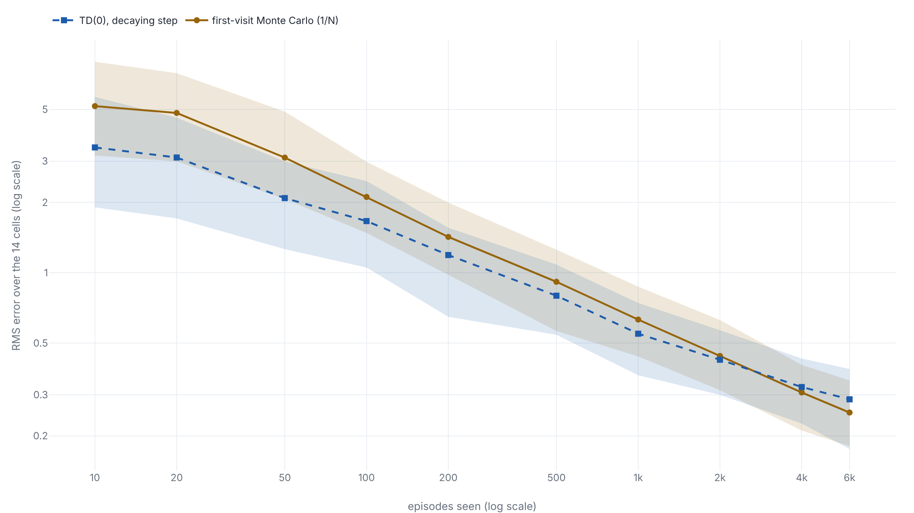
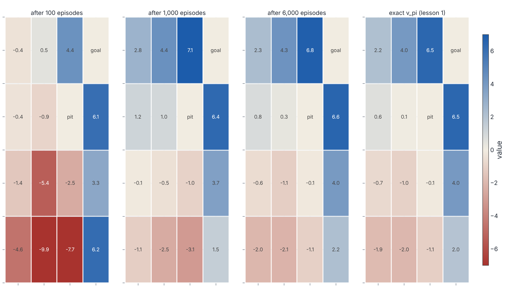

Learning a value function from episodes alone
With the slip rates and rewards hidden, cell 13's value can only be learned from sampled episodes, where Monte Carlo averaging and one-step TD both reach −2.01 by routes that trade variance against bias.
Why this matters
Lessons 1 and 2 could solve the grid because every slip probability and every reward was written down. Take those away and the equations have nothing to run on. What a learner has instead is experience: episodes it played, each a list of the cells it stood in, the moves it made and the rewards it collected, and nothing about the mechanism underneath. This lesson is about turning those episodes into the value of a fixed way of acting, with the slip rates and the rewards that drive them unseen.
The first great success of the idea worked this way. In the early 1990s Gerald Tesauro's TD-Gammon learned to evaluate backgammon positions with a neural network by playing itself and nudging each estimate toward the next position's, with no model of the dice and no library of expert games. The network that started from a raw board and zero built-in knowledge trained for 200,000 self-play games and reached a strong intermediate level, about even with Neurogammon. Later versions, given hand-built features and a two-ply search, took a 40-game session against the world-class player Bill Robertie down to a one-point loss. Backgammon has more than a hundred billion billion positions, so none of this came from a table. It came from samples.
By the end you will have run two ways of learning a value function from samples on lesson 1's grid, with its model hidden. The runs show where each one's error comes from: the method that averages whole outcomes against the method that learns one step at a time.
- 01
-
The value of a state is an average you can solve for: lesson 1 builds the slippery grid, the fixed policy, the value v_\pi and the exact −2.01, and its
gridworld.pyis the environment imported here unchanged. - 02
- Sutton and Barto, Reinforcement Learning: An Introduction: chapters 5 and 6 (printed pp. 91-128) give Monte Carlo and temporal-difference prediction in the field's standard notation, with a second worked example.
When the model is hidden
Lessons 1 and 2 treated the grid as fully known. The transition probabilities P and the rewards R were arrays in memory, so the value of the fixed policy fell out of a linear system, v = (I - \gamma Q)^{-1} b. Lesson 1 put cell 13 at exactly −2.01. Outside a written-down grid that array does not exist. A learner sees only a stream of episodes: each a list of the cell it was in, the reward it got and the cell it reached, with the slip that produced the step unobserved.1
The task is lesson 1's, with less to work from. For a fixed policy \pi, estimate its value function v_\pi(s), the expected discounted return from each cell, from sampled episodes alone.1 This is prediction: it scores one fixed policy and does not try to improve it. Every method below reads only the rewards and next cells the episodes report. The exact solve returns once, as a referee, to measure how far each estimate sits from the −2.01 and the other thirteen values lesson 1 computed, and it never appears inside an estimator.
Lesson 1 already averaged 20,000 sampled returns from cell 13 and landed at −1.94, a breath from its −2.01, but it did that as a one-cell check with the model in hand. Here the sampling is the method rather than the check: it has to cover all fourteen non-terminal cells and work with the model gone.
Averaging the returns
The value of a cell is the expected return from it, and an average is what estimates an expectation. So the first method is the plainest thing that could work, the one lesson 1 reached for at a single cell: follow the policy, record the return that came after each cell, and average. This is Monte Carlo prediction.1
A visit is one occurrence of a cell in an episode.1 How visits are counted splits the method in two. First-visit Monte Carlo averages, for each cell, the returns that followed the first time the cell appeared in each episode. Every-visit Monte Carlo averages over every appearance. On this grid a slip can send the walker back through a cell it already left, so the two counts differ.
Neither needs the episode history kept. The average of n returns can be built one return at a time, holding only the running estimate and the count.1
- V(s)the running estimate of the cell's value, corrected by the error G - V(s)
- \tfrac{1}{N(s)}the step, one over the number of returns averaged into s so far
- Gthe return this cell earned on this episode, the target the estimate moves toward
Hold the step at a fixed \alpha instead and the update becomes V(s) \leftarrow V(s) + \alpha\,[\,G - V(s)\,], a running average that forgets, weighting recent returns more. That matters when the quantity being estimated drifts, and it costs exact convergence, as the runs below show.1
Three properties fix where Monte Carlo is useful. It cannot update a cell until the episode ends, because the return G is not known until the last reward is in.1 First-visit Monte Carlo is unbiased: each first-visit return is an independent sample of v_\pi(s), so their average is an unbiased estimate whose error falls like 1/\sqrt{n}.1 Every-visit Monte Carlo is not. Returns from repeated visits in one episode share a tail, so at a finite sample size its estimate is biased: lower in error early, higher later, though it too converges.2 And because every return is a whole sampled trajectory, Monte Carlo carries the run's full variance: one lucky or unlucky episode shifts the average by a lot.
Learning before the episode ends
Monte Carlo waits for the terminal reward. Temporal-difference learning does not. It replaces the unknown return in the update with an estimate of it, assembled from one observed step: the reward just received, plus the discounted value the learner currently assigns to the cell it landed in.1
- V(S_t)the estimate for the cell just left, the one being updated
- R_{t+1} + \gamma V(S_{t+1})the TD target: one observed reward plus the discounted current estimate of the next cell
The bracket is the TD error, the gap between the one-step target and the old estimate, and it is available one step after leaving S_t.1
The target R_{t+1} + \gamma V(S_{t+1}) is an estimate for two reasons. It samples the environment, taking the one reward and next cell that happened instead of averaging over all that could. And it leans on V(S_{t+1}), the learner's own current guess for the next cell, in place of the true value. Using an existing estimate inside the target is bootstrapping, the move dynamic programming made in lesson 1, except there the model supplied the average over next cells and here a single sampled step stands in for it.1
Two things follow. TD updates online, after every step, so it learns during an episode and needs no terminal state to arrive, which is what lets it run on long or unending tasks.1 And because the target holds V(S_{t+1}), which is wrong early, TD is biased while the estimates are still forming: a one-step target is only as good as the neighbour it trusts.3 Sutton, who introduced temporal-difference methods in 1988, argued that trusting the neighbour can still be the better bet. A successor's estimate is uncorrupted by the noise the rest of the episode would add, and dropping that noise is how a bootstrapped target can carry less variance than the full return.3
What the runs show
Put both estimators on lesson 1's grid with the model hidden. Each run starts every value at 0, draws episodes from random cells, and scores the estimate against the exact v_\pi over the fourteen non-terminal cells. First-visit MC uses the 1/N(s) mean; TD(0) uses a step that decays as N(s)^{-0.7}, slow enough to keep moving and fast enough to settle. Forty seeds give the spread.

samples.py below.1
TD's error is lower at every checkpoint out to 2,000 episodes. By 100 episodes its RMS error over the grid is 1.66 against Monte Carlo's 2.11, and its band across seeds is tighter. A bootstrapped estimate is usable from the first steps, before any episode has returned a complete G. Monte Carlo's error falls more slowly and more raggedly, and somewhere past 2,000 episodes the unbiased average slips under TD, ending at 0.25 against 0.29 by 6,000. Which of the two should be ahead is not settled in general. Sutton and Barto state plainly that no one has proved either method converges faster, and that in practice TD usually wins on stochastic tasks.13 The ordering here also turns on the step sizes, and a different schedule moves the crossing.
Cell 13 shows the two error sources directly. Monte Carlo's estimate of it swings, reading −1.26, −3.61 and −3.96 over the first checkpoints, each an honest average of a handful of wildly varying returns, before it converges to −2.00. TD's estimate slides smoothly but sits too low for a while. It reaches −2.69 near 100 episodes before climbing to −2.01, because early on it bootstraps off neighbours the pit has dragged down. High variance and a settling bias, read off one cell.

samples.py below.1
A decaying step is what lets both reach v_\pi. Hold the step at a constant 0.05 and neither does: the estimates keep lurching in response to the latest episodes and settle into a band around the answer rather than onto it. At that step every-visit Monte Carlo floors at an RMS of 1.42 and TD at 0.82, both far above the hundredths the decaying schedules reach. A constant step buys adaptivity to a moving target and pays for it with a standing error.1
The code
One file holds it. It imports the environment from lesson 1's gridworld.py unchanged and adds the three estimators and the scoring. Each estimator takes a list of (s, a, r, s') steps and reads only the reward and the next cell; transitions and the exact solve appear only in the environment that hands out episodes and in exact_values, which scores. With both files in one folder, uv run samples.py installs numpy from the inline metadata and finishes in a few minutes.
# /// script
# requires-python = ">=3.10"
# dependencies = ["numpy"]
# ///
"""Estimate a fixed policy's value function from sampled episodes alone.
First-visit and every-visit Monte Carlo prediction and TD(0) prediction on
lesson 1's slippery grid, with the model hidden. The estimators read only what
gridworld.episode returns, the reward and next cell of each step; they never
touch P, R, transitions or the policy. The exact solve is used in one place,
scoring, to report error against the known v_pi, never inside an estimator.
"""
import numpy as np
from gridworld import N, PI, TERMINAL, episode, fixed_policy, transitions
GAMMA, SLIP = 0.9, 0.2
TD_DECAY = 0.7 # TD(0) step size alpha(s) = N(s) ** -TD_DECAY, a decaying rule
LIVE = [s for s in range(N) if s not in TERMINAL]
# --- Scoring only: the exact v_pi, never read by an estimator ---------------
def exact_values():
"""v_pi by lesson 1's direct solve, v = (I - gamma Q)^{-1} b."""
Q, b = fixed_policy(PI, SLIP)
return np.linalg.solve(np.eye(N) - GAMMA * Q, b)
def rms(V, v_pi):
"""Root-mean-square error over the 14 non-terminal cells."""
return float(np.sqrt(np.mean((V[LIVE] - v_pi[LIVE]) ** 2)))
# --- The estimators: one episode in, the running estimate updated -----------
# An episode is a list of (cell, action, reward, next cell). Only the reward
# and the next cell are read below.
def first_visit_mc(ep, V, n):
"""Average the return following the first visit to each cell, step 1/N(s)."""
seen, G = {}, 0.0
for s, _a, r, _s2 in reversed(ep):
G = r + GAMMA * G
seen[s] = G # going backward, the final write is the earliest visit
for s, g in seen.items():
n[s] += 1
V[s] += (g - V[s]) / n[s]
def every_visit_mc(ep, V, n, alpha=None):
"""Average the return over every visit; step 1/N(s), or a constant alpha."""
G = 0.0
for s, _a, r, _s2 in reversed(ep):
G = r + GAMMA * G
n[s] += 1
V[s] += (alpha if alpha else 1.0 / n[s]) * (G - V[s])
def td0(ep, V, n, alpha=None):
"""One-step TD; step alpha(s) = N(s) ** -0.7, or a constant alpha."""
for s, _a, r, s2 in ep:
n[s] += 1
step = alpha if alpha else n[s] ** -TD_DECAY
V[s] += step * (r + GAMMA * V[s2] - V[s])
# --- One training run over a stream of episodes, scored at checkpoints -------
def run(seed, episodes, checkpoints, v_pi):
rng = np.random.default_rng(seed)
P = transitions(SLIP) # the environment's model; the learner never reads it
V = {k: np.zeros(N) for k in ("fv", "ev", "td")}
n = {k: np.zeros(N) for k in ("fv", "ev", "td")}
curve = {k: [] for k in ("fv", "ev", "td")}
v13 = {k: [] for k in ("fv", "td")}
snap = {}
cps = set(checkpoints)
for k in range(1, episodes + 1):
start = int(rng.integers(N))
while start in TERMINAL:
start = int(rng.integers(N))
ep = episode(P, PI, start, rng)
first_visit_mc(ep, V["fv"], n["fv"])
every_visit_mc(ep, V["ev"], n["ev"])
td0(ep, V["td"], n["td"])
if k in cps:
for name in curve:
curve[name].append(rms(V[name], v_pi))
for name in v13:
v13[name].append(float(V[name][13]))
snap[k] = {name: V[name].copy() for name in ("fv", "td")}
return curve, v13, snap
def main():
v_pi = exact_values()
print("exact v_pi(13) =", round(float(v_pi[13]), 4), "(lesson 1: -2.01)\n")
episodes, seeds = 6000, 40
cps = [10, 20, 50, 100, 200, 500, 1000, 2000, 4000, 6000]
agg = {k: {c: [] for c in cps} for k in ("fv", "ev", "td")}
v13 = {k: {c: [] for c in cps} for k in ("fv", "td")}
snap0 = None
for seed in range(seeds):
curve, v, snap = run(seed, episodes, cps, v_pi)
for name in agg:
for i, c in enumerate(cps):
agg[name][c].append(curve[name][i])
for name in v13:
for i, c in enumerate(cps):
v13[name][c].append(v[name][i])
if seed == 0:
snap0 = snap
print(f"RMS error over 14 cells vs episodes ({seeds} seeds)")
print("episodes ", "".join(f"{c:7d}" for c in cps))
for name, label in (("fv", "first-visit MC "), ("ev", "every-visit MC "),
("td", "TD(0) decaying ")):
mean = [np.mean(agg[name][c]) for c in cps]
print(label, "".join(f"{m:7.3f}" for m in mean))
for name, label in (("fv", "first-visit p10"), ("td", "TD(0) p10")):
print(label, "".join(f"{np.percentile(agg[name][c], 10):7.3f}" for c in cps))
for name, label in (("fv", "first-visit p90"), ("td", "TD(0) p90")):
print(label, "".join(f"{np.percentile(agg[name][c], 90):7.3f}" for c in cps))
print("\nv(13) estimate vs episodes (mean over seeds), exact -2.01")
for name, label in (("fv", "first-visit MC"), ("td", "TD(0) ")):
print(label, "".join(f"{np.mean(v13[name][c]):7.2f}" for c in cps))
print("\nseed-0 learned grids (for the heatmap):")
for k in (100, 1000, 6000):
print(f" first-visit MC @ {k}:",
[round(float(x), 2) for x in snap0[k]["fv"]])
print(" exact v_pi :", [round(float(x), 2) for x in v_pi])
print("\nconstant alpha = 0.05, final RMS (mean over seeds), a floor above 0:")
for label, est in (("every-visit MC", every_visit_mc), ("TD(0) ", td0)):
finals = []
for seed in range(seeds):
rng = np.random.default_rng(1000 + seed)
P, V, n = transitions(SLIP), np.zeros(N), np.zeros(N)
for _ in range(episodes):
start = int(rng.integers(N))
while start in TERMINAL:
start = int(rng.integers(N))
est(episode(P, PI, start, rng), V, n, alpha=0.05)
finals.append(rms(V, v_pi))
print(f" {label}: {np.mean(finals):.3f} +- {np.std(finals):.3f}")
if __name__ == "__main__":
main()exact v_pi(13) = -2.0055 (lesson 1: -2.01)
RMS error over 14 cells vs episodes (40 seeds)
episodes 10 20 50 100 200 500 1000 2000 4000 6000
first-visit MC 5.165 4.829 3.110 2.110 1.423 0.914 0.630 0.440 0.307 0.252
every-visit MC 5.199 4.808 3.118 2.090 1.428 0.940 0.641 0.444 0.316 0.259
TD(0) decaying 3.437 3.112 2.086 1.663 1.189 0.796 0.548 0.424 0.324 0.287
first-visit p10 3.175 2.998 2.068 1.479 0.979 0.563 0.438 0.314 0.211 0.181
TD(0) p10 1.902 1.708 1.261 1.051 0.647 0.541 0.364 0.300 0.226 0.176
first-visit p90 7.995 7.145 4.891 2.986 1.996 1.255 0.872 0.627 0.403 0.346
TD(0) p90 5.654 4.609 2.994 2.466 1.558 1.082 0.742 0.567 0.429 0.387
v(13) estimate vs episodes (mean over seeds), exact -2.01
first-visit MC -1.26 -3.61 -3.96 -3.52 -2.42 -2.30 -2.12 -2.04 -2.06 -2.00
TD(0) -0.91 -1.59 -2.57 -2.69 -2.48 -2.19 -2.08 -2.03 -2.05 -2.01
seed-0 learned grids (for the heatmap):
first-visit MC @ 100: [-0.39, 0.5, 4.39, 0.0, -0.36, -0.89, 0.0, 6.12, -1.41, -5.36, -2.46, 3.33, -4.56, -9.88, -7.73, 6.2]
first-visit MC @ 1000: [2.78, 4.44, 7.12, 0.0, 1.19, 1.01, 0.0, 6.39, -0.13, -0.47, -0.99, 3.68, -1.13, -2.45, -3.1, 1.48]
first-visit MC @ 6000: [2.29, 4.31, 6.83, 0.0, 0.81, 0.35, 0.0, 6.56, -0.61, -1.15, -0.14, 3.97, -2.02, -2.14, -1.07, 2.2]
exact v_pi : [2.16, 4.04, 6.48, 0.0, 0.61, 0.06, 0.0, 6.48, -0.72, -1.03, -0.1, 4.02, -1.86, -2.01, -1.08, 1.98]
constant alpha = 0.05, final RMS (mean over seeds), a floor above 0:
every-visit MC: 1.423 +- 0.418
TD(0) : 0.825 +- 0.279Scoring a policy is not improving one
Everything here evaluated a single fixed policy. Lesson 2 improved a policy by making it greedy with respect to action values q(s, a), and it built those from v by averaging over next cells with P, the one step that needed the model.1 With P hidden that step is gone. A value function alone cannot say which move is best, because comparing moves means pricing the moves the policy did not take, and the samples only ever show the move it did. Recovering the worth of the alternatives takes action values learned directly. Learning those takes a policy willing to try moves it currently rates low, which a fixed policy never does. Action values and exploration are the two missing pieces, and the lessons that follow add them.1
TD-Gammon had already crossed that line. It did not score a fixed player; it chose each move by the very values it was learning and improved as those values sharpened, which Tesauro calls a combined prediction and control task.4 This lesson isolated the prediction half, on a grid small enough to check every number against the exact answer. The control half, learning the best moves from samples without the model, is the ground the course turns to from here.
The takeaway
With the slip rates and rewards hidden, cell 13's value could no longer be solved for. Both methods recovered it from sampled episodes anyway: first-visit Monte Carlo by averaging whole returns, TD(0) by nudging each estimate toward the next one a step at a time. Both reached −2.01, and the way they got there was the lesson. Monte Carlo's estimate was unbiased and jumped around, each reading an honest average of a few high-variance returns. TD's was smoother and lower in error early, bought with a bias that faded as its neighbours' estimates came right. Which is quicker is not a theorem: it turned on the step size and the grid, and the textbook leaves it open.
What a value function cannot do is rank the moves not taken. That is the distance between scoring a fixed policy and finding a better one, and closing it without the model is the work ahead.
- 01
- Sutton and Barto, chapters 5 and 6: read Example 6.2 (p. 125), the five-state random walk that compares TD with constant-\alpha Monte Carlo, and the batch-updating analysis just after it (pp. 126-128).
- 02
- Sutton, Learning to Predict by the Methods of Temporal Differences (1988): Section 3.1 (pp. 16-18) is the noise argument for why a biased bootstrapped target can beat the actual outcome.
- 03
- Singh and Sutton, Reinforcement Learning with Replacing Eligibility Traces (1996): Section 2.3 (p. 5) and Table 1 settle which Monte Carlo estimator is unbiased and why every-visit trades early error for late.
- 04
- Tesauro, Temporal Difference Learning and TD-Gammon (1995): the full account, the TD(λ) weight rule, the self-play setup, and the results by version against human players.
Sources
- MIT Press · Richard S. Sutton and Andrew G. Barto, Reinforcement Learning: An Introduction, 2nd edition, 2018 (second printing 2020)
- Machine Learning · Satinder P. Singh and Richard S. Sutton, Reinforcement Learning with Replacing Eligibility Traces, 22(1-3), 1996
- Machine Learning · Richard S. Sutton, Learning to Predict by the Methods of Temporal Differences, 3(1), 1988
- Communications of the ACM · Gerald Tesauro, Temporal Difference Learning and TD-Gammon, 1995